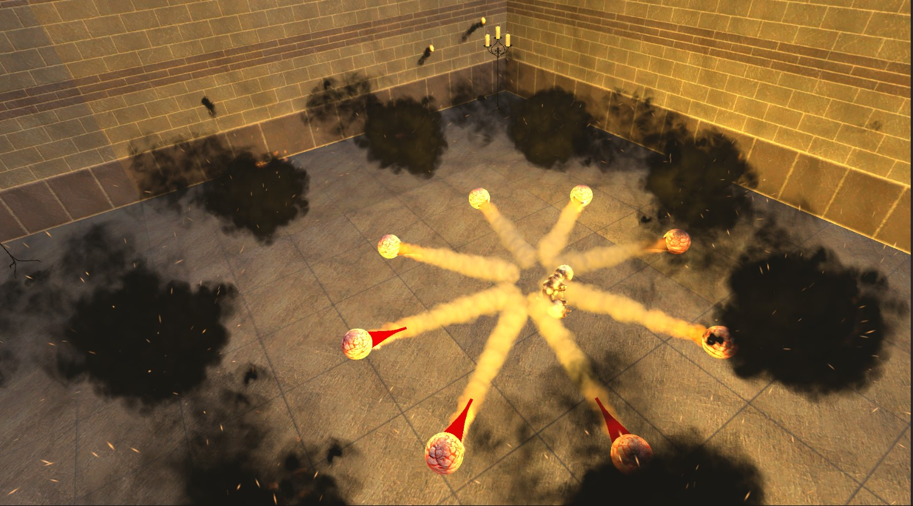

Role: Generalist Programmer
- Time: January 2023 - March 2023
- Full Time
- Unity | C#
- Team Size: 3
- Platform: PC
- Tool: Unity, Visual Studio
Run-n-Dungeon is a fps where a wizards explores randomized chambers with various enemies. As generalist programmer my roles include UI design, programming gamemode and manager, and audio design.
UI Design
I designed a user-friendly interface with UI elements for quick access to essential information. The UX design focused on clarity and minimalism, such as damage and health indicators. This is so players will experience a straightforward and uncluttered interface.
- Implemented functionalities for menus and UI
- Added health and mana indicators positioned for quick readability
- Developed an intuitive and easy-to-navigate UI
Audio Manager and Design
In our Unity project, I enhanced the player experience by integrating audio elements, including background music, sound effects, and ambient audio. I developed an audio manager in Unity to handle playback, volume adjustments, and event triggers, creating a cohesive and immersive audio experience that adapts to in-game actions.
- Implemented audio elements such as sound effects, and ambient sounds
- Developed an audio manager within Unity
- Designed and implemented an audio settings system
Game Manager
In Unity, I developed a game manager system that handled pausing, shields for strategic play, reloading mechanics, level progression tracking, and player death states.
- Developed a centralized game manager handling pausing level progression, and player death states
- Programmed save mechanics and menu UI to continue your game